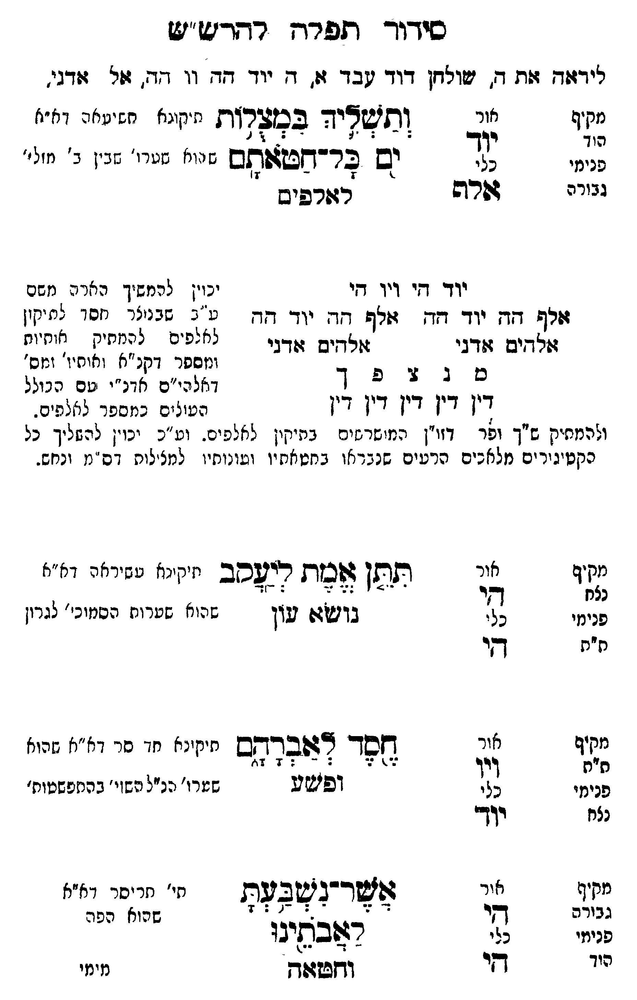

Neue Klartextfassung
[ליראה את ה' שולחן דוד עבד א, ה יוד הה וו הה, אל אדני,] === טבלה === [ותשליך במצלות — תיקונא תשיעאה דא"א שהוא שערו' שבין ב' מזלי'] ותשליך במצלות ים כל חטאתם לאלפים [מקיף — הוד; אור — יוד; כלי — אלף; פנימי — גבורה] === סוף טבלה === יוד הי ויו הי אלף הה יוד הה אלף הה יוד הה אלהים אדני אלהים אדני מ נ צ פ ך דין דין דין דין דין [יכוין להמשיך הארה משם ע"ב שבנוצר חסד לתיקון לאלפים להמתיק אותיות ומספר דקנ"א ושס"ה ושס"ה דאלהי"ם דאדנ"י עם הכולל העולים כמספר לאלפים. ולהמתיק ג"ד דפר' זו"ן המתמתקים בתיקון לאלפים. ועי"כ יכוין להשליך כל הקטיגורים מלאכים הרעים שנבראו בחטאיו ועונותיו למצולות דס"מ ונחש. [?]] === טבלה === [תתן אמת ליעקב — תיקונא עשיראה דא"א שהוא שערות הסמוכים לגרון] תתן אמת ליעקב נושא עון [מקיף — נצח; אור — הי; כלי — הי; פנימי — ת"ת] [חסד לאברהם — תיקונא חד סר דא"א שהוא שערו' כנ"ל הפנוי בהסתפמותו' [?]] חסד לאברהם ופשע [מקיף — ת"ת; אור — ויו; כלי — יוד; פנימי — נצח] [אשר נשבעת לאבתינו — י"ב תיקון דא"א שהוא הפה] אשר נשבעת לאבתינו וחטאה [מקיף — גבורה; אור — הי; כלי — הי; פנימי — הוד] === סוף טבלה ===
Original gegen neue OCR · Niqqud für Vergleich ausgeblendet
Original
[ליראה את ה' שולחןK137-001 דוד עבד א,K137-002 ה ∅K137-003 יוד הה וו הה, אל אדני,] === טבלה === [ותשליך במצלות — תיקונא תשיעאה דא"א שהוא שערו' שבין ב' מזלי'] ותשליך במצלות ים כל חטאתם לאלפים [מקיף — הוד; אור — יוד; כלי — אלף; פנימי — גבורה] === סוף טבלה ===K137-004 יוד הי ויו הי אלף ההK137-005 יוד הה אלף הה יוד הה אלהים אדני אלהים אדני מ נ צK137-006 פ ךK137-007 דין דין דין דין דין [יכוין להמשיך הארה משם ע"ב שבנוצר חסד לתיקון לאלפים להמתיק אותיות ומספר דקנ"א ושס"ה ושס"ה דאלהי"ם דאדנ"י עם הכולל העולים כמספר לאלפים.K137-008 ולהמתיק ג"ד דפר' זו"ן המתמתקים בתיקון לאלפים. ועי"כK137-009 יכוין להשליך כל הקטיגורים מלאכיםK137-010 הרעים שנבראו בחטאיו ועונותיו למצולות דס"מ ונחש. ] === טבלה === [תתן אמת ליעקב — תיקונא עשיראהK137-011 דא"א ∅K137-012 שהוא שערות הסמוכים לגרון] תתן אמת ליעקב נושא עון [מקיף — נצח;K137-013 אור — הי;K137-014 כלי — הי; פנימי — ת"ת] [חסד לאברהם — תיקונא חד סר דא"א שהוא שערו' כנ"ל הפנוי בהסתפמותו' ] חסד לאברהם ופשע [מקיף — ת"ת; אור — ויו; כלי — יוד; פנימי — נצח] [אשר נשבעת לאבתינו — י"ב תיקון דא"א שהוא הפה] אשר נשבעת לאבתינו וחטאה [מקיף — גבורה; אור — הי; כלי — הי; פנימי — הוד] === סוף טבלה ===K137-015
OCR · fehlbar
סיךך לרך רחו-זש"זש פידזזדז זזח ד) ישו9חזןK137-001 דוד 0ב ד זו. ד: יוד דד. וו 7. שח זזדגי. מקיף אור וותזשצ"יד בכדרז ת חיקינא חנינא( ( נ)K137-002 ה ך ף 3 - - 6- 1 רץ צצ"צל - פנימי (ך ובש בר-אקש1 תש ח ון שטרי' גב'ן ב' מזל'' -) 4 - 7] גבורה פריש ר7:רפישK137-003 יוד ד[י ויו דזי יכוין לטמשיך האני: נזשם זזיף 7.K137-004 יוד תד יזלף דד.K137-005 יוד דד ג - זבניז- חסו לי קז. זזאדיש זזדגי ולחיש צודני נייצפ ש ל [זת"ק י"ק ש ' ג 7K137-006 פ וזספר דקנ"א (אותי:' ומש' .. 4 . 2(. 3 [. דאלהי"ם אדנ"י טם ה נוללK137-007 דין דין דין דין דין הע. ב במספר לנז[תים.K137-008 ולהמתיק ש"ך זפר דזו"ן המי שר שיח בתיקין לאלפי . וג"כK137-009 יכוין להשליך כל כקטיניר ים מלא כיםK137-010 הרעים שנבד או בחטאת יו ועונותי. למצ לות דס "מ ונחב. מקיף אור תושן זדבזת ריעסב יזיקינא טשירארK137-011 דא"א נצח ף - - צ"ז : 3 3 : -1ף פנימי צ בך (שגו שוןK137-012 שהוא שערות הסמוכ' לגרון ח"ת ד[- מקיףK137-013 אור גחזסך- 76פב-דש תיןינא ח. סר דא"יז הוא פי דרץ -.) 4 :: - 7 3- 7 -זי) פנימי בנ) ופי2ט שטרו' ננ"ל השזי' בהחפשטות' נצח ו"ךי מקיף ציר עהצשד-ב(שב2ק תי' חר יסר א"א גבורה 22 ' 7: - 2 -: ז שהוא הפוד פנייK137-014 כלי רלובתיבו ויו די וזשז(ץ נימיK137-015